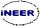
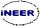

Enjoy the Scandinavian Atmosphere
Turku, situated in the southwestern part of the country, is the oldest city in Finland. The city life is focused around the beautiful river Aura. Turku is one of the most popular conference cities in Finland with many attractions and events. Turku was the European Capital of Culture 2011.
There are frequent flight connections to Turku via Helsinki, Stockholm, Copenhagen, Barcelona, Budapest, Gdansk, London, and Riga. A convenient alternative is to take a direct airport bus from Helsinki-Vantaa airport to Turku. An interesting opportunity is also to fly to Stockholm and enjoy a luxurious cruise to Turku through the archipelago on one of the large passenger ships operating daily.
Virtual Finland - your window on Finland
Travelling to Finland - practical information
Turku - European Capital of Culture 2011
Turku Science Park - ICT Building

The main venue of the conference was the ICT Building in Turku Science Park area near the city center. The ICT Building is the home of the higher ICT education in Turku. The facilities are used by more than 3000 students and 700 staff members.
The ICT Building together with the other facilities of the Kupittaa campus offered modern premises for fruitful presentations and discussions.
The ICEE 2012 Program Booklet contains important practical information on the venue, too. Click here to download the ICEE 2012 Program Booklet.
The visiting address of the venue:
Turku University of Applied Sciences / ICT Building
Joukahaisenkatu 3
FI-20520 TURKU
Finland
Information about car parking near ICT Building
 
